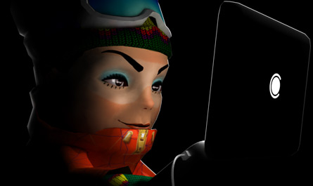
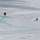
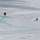

Если Вы хотите оперативно получать пресс-релизы Компании по девелопменту горнолыжного курорта «Роза Хутор», подпишитесь на нашу новостную рассылку, указав адрес вашей электронной почты:
Пресс-релизы  Наверх
Наверх
| 2005 | 2006 | 2007 | 2008 | 2009 | 2010 | 2011 | ||||||
9 февраля «Интеррос» представил общественности проект развития горнолыжного курорта «Роза Хутор»
11 февраля В работе круглого стола «Сочи и горноклиматический курорт «Красная Поляна»: вчера, сегодня, завтра» приняли участие сотрудники компании «Интеррос»
31 марта Определен генеральный проектировщик горнолыжного курорта «Роза Хутор»
27 апреля Генеральный директор компании «Роза Хутор» принял участие в публичных слушаниях по проекту горно-климатического комплекса «Красная Поляна»
25 июня В Сочи создается офис по туризму курорта Красная Поляна
3 октября В рамках четвертого экономического форума «Кубань–2005» прошла презентация проекта «Роза Хутор».
20 декабря Российские экологи одобрили планы строительства нового горнолыжного курорта «Роза Хутор».
21 февраля Компания "Роза Хутор" стала победителем конкурса на право аренды земельного участка площадью 125 га в Сочинском национальном парке
24 апреля Генеральный директор «Розы Хутор» Нина Загорулько приняла участие в работе Международного конгресса горнолыжной индустрии
1 сентября Проект первой фазы строительства горнолыжного курорта «Роза Хутор» получил положительное заключение государственной экологической экспертизы Росприроднадзора
19 февраля Компания «Роза Хутор» и Всемирный фонд дикой природы объединят усилия для развития экологического строительства
21 февраля В рамках программы мероприятий по приему Оценочной комиссии МОК в г. Сочи состоялась презентация ГЛК «Роза Хутор» на территории строящегося объекта в Красной Поляне
5 апреля Roger McCarthy назначен Директором по стратегии и производству в компанию «Роза Хутор»
21 мая Компания «Роза Хутор» поддержала проект Всемирного фонда дикой природы по возвращению на Кавказ переднеазиатского леопарда
5 июля «Роза Хутор» примет Зимнюю Олимпиаду Сочи 2014
13 июля Компания «Роза Хутор» не получала инвестиционных предложений от группы «Онэксим»
7 августа Президент России Владимир Путин наградил Заявочный комитет «Сочи-2014»
26 сентября Эксперты МОК посетили горнолыжный курорт «Роза Хутор»
1 октября Сергей Трубин назначен Генеральным директором компании «Роза Хутор»
2 октября Создан Оргкомитет «Сочи-2014» (с официального сайта «Сочи-2014»)
16 октября ОАО «ОПИН» стало управляющей компанией по развитию курорта «Роза Хутор»
22 ноября ОАО «ОПИН» объявляет о подписании договора на оказание услуг по управлению горнолыжным курортом «Роза Хутор»
25 декабря Кавказский заповедник готовится к приёму леопарда
5 февраля Специалисты Сочинского национального парка представили «Экологический мониторинг горнолыжного комплекса «Роза Хутор»
24 апреля Первый визит Координационной комиссии МОК в Сочи, 21-23 апреля 2008 г
31 мая На горнолыжном курорте «Роза Хутор» открыта самая высокогорная в мире «Аллея спортивных звезд»
4 июля «Аллея спортивных звезд» расширилась
10 июля В Сочи построен первый «дом» для леопарда
4 сентября Международный Олимпийский Комитет одобрил размещение фристайл-трассы и горной олимпийской деревни на территории курорта «Роза Хутор»
19 сентября «Внешэкономбанк» и «Компания по девелопменту горнолыжного курорта «Роза Хутор» объявляют о подписании Соглашения об общих принципах организации финансирования проекта «Строительство и эксплуатация горнолыжного курорта «Роза Хутор»
10 декабря Общество с ограниченной ответственностью «Компания по девелопменту горнолыжного курорта «Роза Хутор» останавливает строительство горнолыжного курорта «Роза Хутор»
4 февраля ООО «Компания по девелопменту горнолыжного курорта «Роза Хутор», Государственное Учреждение «Сочинский национальный парк» и Территориальное Управление Федерального агентства по управлению государственным имуществом подписали мировое соглашение
12 марта Пятнадцатый арбитражный апелляционный суд утвердил последнее мировое соглашение по вопросам аренды земель, на которых ведется строительство горнолыжного курорта «Роза Хутор»
20 апреля О ПОДПИСАНИИ КРЕДИТНОГО СОГЛАШЕНИЯ МЕЖДУ ВНЕШЭКОНОМБАНКОМ И ООО «РОЗА ХУТОР»
14 мая Второй визит Координационной комиссии МОК Сочи, Россия, 12-14 мая 2009 г
5 июня ООО «Компания по девелопменту горнолыжного курорта «Роза Хутор», ГУ «Сочинский национальный парк» и Минприроды России отметили экологические праздники: Всемирный день окружающей среды и День эколога
19 июня 19 июня 2009 года состоялось внеочередное Общее собрание участников ООО «Роза Хутор»
19 сентября В Сочинском национальном парке встретили первых леопардов
3 ноября Визит руководства FIS на горнолыжный курорт "Роза Хутор"
23 декабря Открытие ретроспективной фотовыставки «Заповедная Россия»
12 февраля «Роза Хутор» и ИД «Комсомольская правда» на Олимпиаде в Ванкувере
23 февраля Презентация ГЛК «Роза Хутор» на территории Главного пресс-центра Олимпийских игр в Ванкувере.
26 марта Третий Визит руководства FIS на горнолыжный курорт «Роза Хутор»
15 апреля Третий визит Координационной комиссии МОК в Сочи, 13-15 апреля 2010 г.
3 мая Леопарды из Ирана осваиваются в Сочи
6 мая Компания по девелопменту горнолыжного курорта «Роза Хутор» и The Rezidor Hotel Group заключили соглашение об управлении двумя гостиницами на территории горнолыжного курорта «Роза Хутор».
7 июня Президент Международного олимпийского комитета Жак Рогге побывал на горнолыжном курорте «Роза Хутор»
11 июня На курорте «Роза Хутор» начато строительство отеля сети HELIOPARK
4 июля Аллея «Звезды спорта» на курорте «Роза Хутор» расширилась
3 августа Президент Российской Федерации Дмитрий Медведев получил первый ски-пасс во время его визита на горнолыжный курорт «Роза Хутор»
27 октября АЗИМУТ Отель появится на горнолыжном курорте «Розе Хутор»
25 ноября Розыгрыш Кубка Европы по горнолыжному спорту пройдет в феврале 2011 года
14 декабря ООО «Роза Хутор» и французская Compagnie des Alpes договорились о стратегическом партнерстве по управлению горнолыжным курортом «Роза Хутор»
15 декабря Открыты олимпийские трассы горнолыжного центра «Роза Хутор»
4 января На территории горнолыжного курорта «Роза Хутор» Президент РФ Дмитрий Медведев провел рабочее совещание, посвященное подготовке к Олимпиаде 2014 года
29 января С 29 января горнолыжный курорт «Роза Хутор» начинает работать в режиме тестовой эксплуатации
11 февраля 12 февраля 2011 г. на ГЛК «Роза Хутор» стартует этап Кубка России по горнолыжному спорту
11 февраля Открыто on-line бронирование билетов в финишную зону на этапы Кубка России и Кубка Европы
13 февраля 12 февраля 2011 года на трассах горнолыжного курорта «Роза Хутор» прошел этап Кубка России по горнолыжному спорту
17 февраля 18 февраля 2011 г. на ГЛК «Роза Хутор» стартует этап Кубка Европы по горнолыжному спорту
19 февраля 18 февраля 2011 года на горнолыжном курорте «Роза Хутор» состоялся этап Кубка Европы по горнолыжному спорту среди мужчин — первые международные тестовые соревнования в рамках подготовки к Зимним Олимпийским Играм 2014 года в Сочи
23 февраля 23 февраля 2011 года на горнолыжном курорте «Роза Хутор» стартовал женский этап Кубка Европы по горнолыжному спорту
24 февраля По решению судейской коллегии соревнования по супергиганту женского этапа Кубка Европы переносятся на 25 февраля
24 февраля Сегодня на горнолыжном курорте «Роза Хутор» прошел второй день соревнований по скоростному спуску женского этапа Кубка Европы
25 февраля С 26 февраля 2011 года наш курорт открыт для посетителей в режиме тестовой эксплуатации
25 февраля Сегодня состоялся заключительный день женского этапа Кубка Европы по горнолыжному спорту
3 марта Для вас, милые дамы, бесплатный ски-пасс в подарок
4 марта ООО «Роза Хутор» и группа Accor подписали договор на управление отелем «Mercure Роза Хутор» в Сочи
15 марта Команда инструкторов горнолыжного курорта «Роза Хутор» заняла все первые места в Открытом первенстве среди инструкторов Красной Поляны
17 марта Первым отелем, который откроется на горнолыжном курорте «Роза Хутор», будет управлять IFK Hotel Management
21 марта На горнолыжном курорте «Роза Хутор» завершился фестиваль спорта и музыки Carlsberg Jibbing Fest
22 марта МОК и Международная федерация лыжного спорта (FIS) оценили готовность горнолыжного курорта "Роза Хутор"к проведению этапа Кубка Мира в 2012 году
23 марта Компания по девелопменту горнолыжного курорта «Роза Хутор» примет участие в программе восстановления экосистемы бассейна реки Мзымта
31 марта Горнолыжный курорт «Роза Хутор» открыт для посетителей до 9 мая 2011 года
20 апреля C 30 апреля на горнолыжном курорте «Роза Хутор» стартует фристайл-лагерь Freestyle Camp 2011
28 апреля Аккредитация СМИ на Freestyle Camp 2011
29 апреля 27-28 апреля состоялся очередной инспекционный визит руководства FIS на горнолыжный курорт «Роза Хутор»
10 мая 9 мая на горнолыжном курорте "Роза Хутор" в Красной Поляне закрылся горнолыжный сезон 2010-2011
14 мая Операторы ратраков (снегоуплотнительных машин) горнолыжного курорта «Роза Хутор» приняли участие в 10-м Международном лагере профессионалов PistenBully 2011
6 июня С 6 по 27 июня на курорте «Роза Хутор» работают бойцы стройотряда «Авторадио» - совместной акции ведущей российской радиостанции и горнолыжного курорта
20 июня Горнолыжный курорт «Роза Хутор» победил в номинации «Открытие года»
3 июля На аллее «Звезд спорта» на ГЛК «Роза Хутор» появились новые саженцы
6 июля На ГЛК «Роза Хутор» в 2014 году будет разыграно 30 комплектов олимпийских медалей
25 июля Представители FIS проинспектировали олимпийские объекты горнолыжного курорта «Роза Хутор» - сноуборд-парк и фристайл-центр
30 сентября Представители FIS проинспектировали олимпийские объекты курорта «Роза Хутор»
26 октября Завершается строительство двух гостиниц на курорте «Роза Хутор»
21 ноября На курорте «Роза Хутор» появится первый в России отель под брендом «Extreme»
1 декабря В Экстрим-парке «Роза Хутор» начался монтаж канатных дорог
13 декабря Курорт «Роза Хутор» выпустил уникальный фотоальбом «Горнолыжный спорт в России. История и современность»
19 декабря Сотрудник курорта "Роза Хутор" Алексей Букинич стал первым в России обладателем почетного звания "Снежный барс России"
20 декабря Открытие горнолыжного сезона 2011/2012 на курорте «Роза Хутор» состоится 24 декабря
21 декабря Аккредитация СМИ на открытие горнолыжного сезона 2011/2012 на курорте «Роза Хутор»
26 декабря Владислав Третьяк – Бургомистр курорта «Роза Хутор»
27 декабря Курорт «Роза Хутор» открыл горнолыжный сезон 2011/2012
Публикации Наверх
| 2008 | 2009 | 2010 | 2011 | |||
Комсомольская Правда Сочи выдержал первый экзамен
Спорт-Экспресс «Роза Хутор» опережает график
Советский спорт «Роза» расцветает. Специальный репортаж: Наш корреспондент проинспектировал олимпийские объекты за пять лет до начала игр
Комсомольская Правда Красная Поляна: пять лет до Олимпиады
Московская правда Горы — не город
Интерфакс МОК искал, МОК не нашел
Советский спорт Добрая дюжина. 12 олимпийских комиссаров вновь похвалили работу по подготовке к Играм-2014
Спорт Экспресс Килли и Ко полностью удовлетворены ходом работ
Московский Комсомолец Олимпийские дела пошли в горы
Комсомольская правда Владимир Потанин: «Мы построим в Красной Поляне свой Куршевель»
Спорт-экспресс До первых соревнований — меньше года
Спорт-экспресс FIS подтвердила: «Роза Хутор» готов к Играм
Ведомости, 103 (2621) В гости к «Интерросу»
Советский спорт, №98-В(18156) Попов посадил пихту
www.kremlin.ru Сайт Президента России Дмитрий Медведев осмотрел спортивные объекты, строящиеся на горнолыжном курорте «Роза Хутор»
Комсомольская правда Медведев проверил олимпийские объекты
деловая газета Маркер «Заработать до Олимпиады не удастся»
Медиа Наверх
Горнолыжный курорт "Роза Хутор"
 
Этап Кубка Европы 2011. Мужчины. Скоростной спуск


Контакты для прессы Наверх
Вергельская Виктория
Начальник Управления по связям с общественностью и рекламе
press@rosaski.com
Кудрявцева Наталья
Начальник Oтдела по связям с общественностью и рекламе
pr@rosaski.com
Телефон: +7 (495) 232-18-13
Факс: +7 (495) 666-14-27
| Поделиться: |
|


{kind=link}
{kind=link}
{kind=link}
{kind=link}
{kind=link}
{kind=link}
{kind=link}
{kind=link}
{kind=link}
{kind=link}
{kind=link}
{kind=link}
{kind=link}
{kind=link}
{kind=link}
{kind=link}
{kind=link}
{kind=link}
{kind=link}
{kind=link}
{kind=link}
{kind=link}
{kind=link}
{kind=link}
{kind=link}
{kind=link}
{kind=link}
{kind=link}
{kind=link}
{kind=link}
{kind=link}
{kind=link}
{kind=link}
{kind=link}
{kind=link}
{kind=link}
{kind=link}
{kind=link}
{kind=link}
{kind=link}
{kind=link}
{kind=link}
{kind=link}
{kind=link}
{kind=link}
{kind=link}
{kind=link}